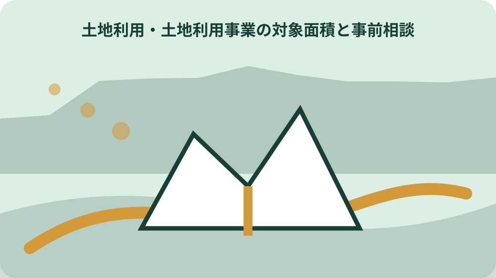
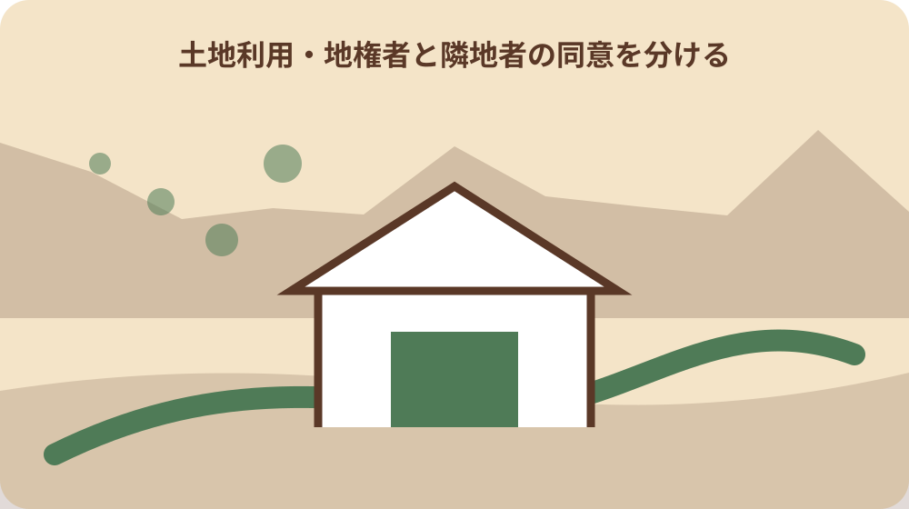

先に結論を確認する
この記事の答え：一団の土地で判断されるため、連続する複数筆や一体計画は合計面積を示して相談します。
森町で最初に照合する条件：隣接・連続する筆を一団として合計し、1000平方メートル未満へ分割して見ない。
計画地を一筆でなく一団として囲む
面積基準は1000平方メートル以上の一団の土地であり登記上一筆だけの比較ではない。計画地を一筆でなく一団として囲むについて資料と現物を比べる際は、一団の区域図には除外した筆も理由付きで示し、面積基準を避けるための恣意的な切り分けと見られないようにします。
隣接筆、借地、進入路、調整池を含む事業区域を同じ図に描く。計画地を一筆でなく一団として囲むを家族へ引き継ぐ記録では、一団の区域図には除外した筆も理由付きで示し、面積基準を避けるための恣意的な切り分けと見られないようにします。
筆別面積と区域合計を併記し、取得時期が違う土地も計画上の一体性を説明する。計画地を一筆でなく一団として囲むについて担当先へ尋ねる前には、一団の区域図には除外した筆も理由付きで示し、面積基準を避けるための恣意的な切り分けと見られないようにします。
便宜的な分筆だけで対象外と決めず、事業全体を町へ示す。計画地を一筆でなく一団として囲むで判断を急がないためには、一団の区域図には除外した筆も理由付きで示し、面積基準を避けるための恣意的な切り分けと見られないようにします。
一団の区域図には除外した筆も理由付きで示し、面積基準を避けるための恣意的な切り分けと見られないようにします。
現況と区画・形質変更を比較する
制度は土地の区画または形質の変更を伴う事業を対象としている。現況と区画・形質変更を比較するについて資料と現物を比べる際は、現況高と計画高の差、切盛土量、排水方向を対応させ、建物用途だけでは見えない土地の変化を説明します。
現況高、切土、盛土、擁壁、道路、排水の変化を新旧二枚で比べる。現況と区画・形質変更を比較するを家族へ引き継ぐ記録では、現況高と計画高の差、切盛土量、排水方向を対応させ、建物用途だけでは見えない土地の変化を説明します。
工事数量が未定でも変更予定範囲と目的を色分けして事前相談へ持参する。現況と区画・形質変更を比較するについて担当先へ尋ねる前には、現況高と計画高の差、切盛土量、排水方向を対応させ、建物用途だけでは見えない土地の変化を説明します。
建物用途だけを書き、土地自体の変更を省略しない。現況と区画・形質変更を比較するで判断を急がないためには、現況高と計画高の差、切盛土量、排水方向を対応させ、建物用途だけでは見えない土地の変化を説明します。
現況高と計画高の差、切盛土量、排水方向を対応させ、建物用途だけでは見えない土地の変化を説明します。
1000平方メートルの根拠表を作る
各筆の公簿面積と実測予定面積が異なる場合は数値の出典を分ける。1000平方メートルの根拠表を作るについて資料と現物を比べる際は、千平方メートルとの比較表には各筆、進入路、調整池の算入可否を記し、合計値だけを独り歩きさせません。
道路部分や残地を事業区域へ含めるかで合計が変わるため範囲定義が重要である。1000平方メートルの根拠表を作るを家族へ引き継ぐ記録では、千平方メートルとの比較表には各筆、進入路、調整池の算入可否を記し、合計値だけを独り歩きさせません。
地番、所有者、面積、区域内面積、権利を一行ずつ並べる。1000平方メートルの根拠表を作るについて担当先へ尋ねる前には、千平方メートルとの比較表には各筆、進入路、調整池の算入可否を記し、合計値だけを独り歩きさせません。
端数や共有持分を自分の都合で除かず、計算条件を町へ確認する。1000平方メートルの根拠表を作るで判断を急がないためには、千平方メートルとの比較表には各筆、進入路、調整池の算入可否を記し、合計値だけを独り歩きさせません。
千平方メートルとの比較表には各筆、進入路、調整池の算入可否を記し、合計値だけを独り歩きさせません。

事前協議申出を最初の節目にする
森町は事前協議申出書を承認申請とは別に用意している。事前協議申出を最初の節目にするについて資料と現物を比べる際は、事前協議申出の提出日、町の質問、回答、追加資料を時系列化し、本申請前の未解決事項を残します。
初期相談で関係部署と必要資料を把握すれば設計後の大幅変更を減らせる。事前協議申出を最初の節目にするを家族へ引き継ぐ記録では、事前協議申出の提出日、町の質問、回答、追加資料を時系列化し、本申請前の未解決事項を残します。
相談日、計画版、町からの指摘、回答期限を議事メモにする。事前協議申出を最初の節目にするについて担当先へ尋ねる前には、事前協議申出の提出日、町の質問、回答、追加資料を時系列化し、本申請前の未解決事項を残します。
事前協議の受付を実施計画承認と同じ完了欄へ入れない。事前協議申出を最初の節目にするで判断を急がないためには、事前協議申出の提出日、町の質問、回答、追加資料を時系列化し、本申請前の未解決事項を残します。
事前協議申出の提出日、町の質問、回答、追加資料を時系列化し、本申請前の未解決事項を残します。
用途図は概略確認に使う
森町の用途図は縮尺1万分の1で都市計画の概略を示す参考資料である。用途図は概略確認に使うについて資料と現物を比べる際は、用途図は区域の概略を知る入口とし、地番ごとの規制や個別可否を図の色だけで決めません。
画面上の色境界が対象筆の境界と一致するとは限らない。用途図は概略確認に使うを家族へ引き継ぐ記録では、用途図は区域の概略を知る入口とし、地番ごとの規制や個別可否を図の色だけで決めません。
土地の位置を用途図に落とし、詳細区域は建設課へ地番で照会する。用途図は概略確認に使うについて担当先へ尋ねる前には、用途図は区域の概略を知る入口とし、地番ごとの規制や個別可否を図の色だけで決めません。
色が一色に見えることだけで法規制を確定しない。用途図は概略確認に使うで判断を急がないためには、用途図は区域の概略を知る入口とし、地番ごとの規制や個別可否を図の色だけで決めません。
用途図は区域の概略を知る入口とし、地番ごとの規制や個別可否を図の色だけで決めません。
地権者と隣地者の同意を分ける
森町は地権者同意書と隣地者同意書を別の参考様式として公開している。地権者と隣地者の同意を分けるについて資料と現物を比べる際は、地権者、隣接者、その他関係者を役割別に整理し、誰の何に対する同意かを同意書へ対応させます。
所有者、借地権者、隣接者では確認する利害と署名資格が異なる。地権者と隣地者の同意を分けるを家族へ引き継ぐ記録では、地権者、隣接者、その他関係者を役割別に整理し、誰の何に対する同意かを同意書へ対応させます。
権利者一覧から該当者を抽出し、説明図面の版を同意書へ対応させる。地権者と隣地者の同意を分けるについて担当先へ尋ねる前には、地権者、隣接者、その他関係者を役割別に整理し、誰の何に対する同意かを同意書へ対応させます。
古い計画図への同意を変更後の計画へ流用しない。地権者と隣地者の同意を分けるで判断を急がないためには、地権者、隣接者、その他関係者を役割別に整理し、誰の何に対する同意かを同意書へ対応させます。
地権者、隣接者、その他関係者を役割別に整理し、誰の何に対する同意かを同意書へ対応させます。
町内会と部農会への説明を記録する
町内会と部農会についても別々の同意書参考様式が用意される。町内会と部農会への説明を記録するについて資料と現物を比べる際は、町内会と部農会への説明内容、質問、回答を残し、行政承認と地域説明を同じ完了欄に入れません。
排水、工事車両、農道、水路など地域単位で確認すべき事項がある。町内会と部農会への説明を記録するを家族へ引き継ぐ記録では、町内会と部農会への説明内容、質問、回答を残し、行政承認と地域説明を同じ完了欄に入れません。
説明日、参加者、質問、修正事項、使用図面を議事録にする。町内会と部農会への説明を記録するについて担当先へ尋ねる前には、町内会と部農会への説明内容、質問、回答を残し、行政承認と地域説明を同じ完了欄に入れません。
代表者の署名だけを住民全員の個別権利同意と同じ意味にしない。町内会と部農会への説明を記録するで判断を急がないためには、町内会と部農会への説明内容、質問、回答を残し、行政承認と地域説明を同じ完了欄に入れません。
町内会と部農会への説明内容、質問、回答を残し、行政承認と地域説明を同じ完了欄に入れません。
承認申請と実施計画書を対応させる
実施計画承認申請書と実施計画書は別様式として示される。承認申請と実施計画書を対応させるについて資料と現物を比べる際は、承認申請書の区域、用途、工程が実施計画書と一致するか確認し、差異は提出前に解消します。
申請書の事業目的と図面・工程・排水計画がずれると確認が難しくなる。承認申請と実施計画書を対応させるを家族へ引き継ぐ記録では、承認申請書の区域、用途、工程が実施計画書と一致するか確認し、差異は提出前に解消します。
書類番号、作成日、図面版を索引にし、差替え時は旧版を明記して保管する。承認申請と実施計画書を対応させるについて担当先へ尋ねる前には、承認申請書の区域、用途、工程が実施計画書と一致するか確認し、差異は提出前に解消します。
最終版が分からない混在ファイルのまま着工判断へ進まない。承認申請と実施計画書を対応させるで判断を急がないためには、承認申請書の区域、用途、工程が実施計画書と一致するか確認し、差異は提出前に解消します。
承認申請書の区域、用途、工程が実施計画書と一致するか確認し、差異は提出前に解消します。
変更承認と変更届の境界を確認する
森町は変更承認申請書と変更届の両方を公開している。変更承認と変更届の境界を確認するについて資料と現物を比べる際は、変更内容が承認対象か届出対象かを町へ確認し、自己判断で軽微変更として処理しません。
どの変更が承認対象でどれが届出かは変更内容を示して判断を仰ぐ必要がある。変更承認と変更届の境界を確認するを家族へ引き継ぐ記録では、変更内容が承認対象か届出対象かを町へ確認し、自己判断で軽微変更として処理しません。
面積、配置、施工者、工程の変更前後を表にして町へ相談する。変更承認と変更届の境界を確認するについて担当先へ尋ねる前には、変更内容が承認対象か届出対象かを町へ確認し、自己判断で軽微変更として処理しません。
軽微だと思うという自己判断だけで変更手続を省略しない。変更承認と変更届の境界を確認するで判断を急がないためには、変更内容が承認対象か届出対象かを町へ確認し、自己判断で軽微変更として処理しません。
変更内容が承認対象か届出対象かを町へ確認し、自己判断で軽微変更として処理しません。

着手・完了・中止・再開を日付で追う
工事の四つの状態を扱う様式が用意され、事業廃止は別様式である。着手・完了・中止・再開を日付で追うについて資料と現物を比べる際は、着手、完了、中止、再開の日付と提出書類を対応させ、現場工程だけが行政記録より先行しないようにします。
中止と廃止、再開と新規着手を家族台帳で混同しないことが重要である。着手・完了・中止・再開を日付で追うを家族へ引き継ぐ記録では、着手、完了、中止、再開の日付と提出書類を対応させ、現場工程だけが行政記録より先行しないようにします。
届出日、実際の日、受付控え、現場写真を同じ行へ置く。着手・完了・中止・再開を日付で追うについて担当先へ尋ねる前には、着手、完了、中止、再開の日付と提出書類を対応させ、現場工程だけが行政記録より先行しないようにします。
工事が止まっている外観だけで正式な中止届提出を断定しない。着手・完了・中止・再開を日付で追うで判断を急がないためには、着手、完了、中止、再開の日付と提出書類を対応させ、現場工程だけが行政記録より先行しないようにします。
着手、完了、中止、再開の日付と提出書類を対応させ、現場工程だけが行政記録より先行しないようにします。
県の開発許可と並行して確認する
県の開発許可は公共施設や排水施設の整備等を通じ適正な土地利用を図る制度である。県の開発許可と並行して確認するについて資料と現物を比べる際は、県の開発許可と町の土地利用承認を並行管理し、一方の相談結果を他方の許可と読み替えません。
森町土地利用事業の承認と根拠・審査項目・申請先が同じではない。県の開発許可と並行して確認するを家族へ引き継ぐ記録では、県の開発許可と町の土地利用承認を並行管理し、一方の相談結果を他方の許可と読み替えません。
町との事前協議時に県許可や他法令の要否と相談順を確認する。県の開発許可と並行して確認するについて担当先へ尋ねる前には、県の開発許可と町の土地利用承認を並行管理し、一方の相談結果を他方の許可と読み替えません。
一方の承認番号を他方の許可番号として記録しない。県の開発許可と並行して確認するで判断を急がないためには、県の開発許可と町の土地利用承認を並行管理し、一方の相談結果を他方の許可と読み替えません。
県の開発許可と町の土地利用承認を並行管理し、一方の相談結果を他方の許可と読み替えません。
大石の視点：面積より排水先を早く見る
面積基準、様式、用途図の注意は公的資料で確認できる事実である。大石の視点：面積より排水先を早く見るについて資料と現物を比べる際は、排水先を早く確認するという私見は、面積基準や法定手続を省略してよいという意味ではありません。
私は土地活用の初期段階で1000平方メートル計算と同時に排水先と進入路を見るべきだと考える。大石の視点：面積より排水先を早く見るを家族へ引き継ぐ記録では、排水先を早く確認するという私見は、面積基準や法定手続を省略してよいという意味ではありません。
売却未定でも計画区域、隣地、水路、道路を一枚にすれば選択肢を比較できる。大石の視点：面積より排水先を早く見るについて担当先へ尋ねる前には、排水先を早く確認するという私見は、面積基準や法定手続を省略してよいという意味ではありません。
これは私見であり、対象性と承認可否は森町等の所管機関が判断する。大石の視点：面積より排水先を早く見るで判断を急がないためには、排水先を早く確認するという私見は、面積基準や法定手続を省略してよいという意味ではありません。
排水先を早く確認するという私見は、面積基準や法定手続を省略してよいという意味ではありません。